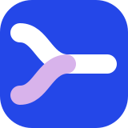
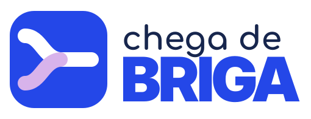
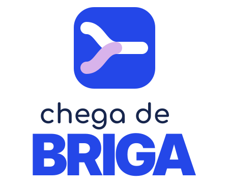

Junto, não em cima
O app organiza tarefas entre moradores. A marca conversa como parceira, nunca como fiscal.

chega de BRIGACombinar, dividir e concluir tarefas sem transformar a louça numa novela.
Conhecer a marcaChega de Briga ajuda pessoas que dividem uma casa a dividir também a responsabilidade por ela. O combinado fica à vista; a cobrança deixa de ser o assunto do dia.
O app organiza tarefas entre moradores. A marca conversa como parceira, nunca como fiscal.
Quem faz, o quê e quando precisam ser óbvios sem pedir uma planilha mental.
A graça abre a conversa. Prazos, erros e próximos passos continuam diretos.
As duas curvas chegam de pontos diferentes e seguem juntas. O encontro é o foco, não a briga.
Arquivos SVG com letras convertidas em vetor. Escolha a composição pelo espaço disponível; preserve o desenho e o respiro.



Deixe uma margem livre de pelo menos ¼ da largura do símbolo. Use o símbolo a partir de 24 px e as assinaturas a partir de 180 px de largura.
Esticar ou girar as assinaturas; refazer as letras; usar o logo colorido sobre fundos que escondam seu contorno; pôr texto dentro do ícone pequeno. O símbolo isolado pode girar em peças expressivas.
O encontro dos caminhos se repete em linhas, adesivos e detalhes. Composições podem sair da grade; informação e ações continuam fáceis de achar.
Grade de 24 × 24, traço de 2,5 e extremidades arredondadas. Use ícone com rótulo em ações pouco familiares e escolha o arquivo claro ou escuro pelo fundo.
Os caminhos se encontram para indicar colaboração. Respostas frequentes são curtas; a celebração fica para a conclusão. Animação nunca atrasa a ação nem substitui o estado em texto.
Branco mantém a interface arejada. O amarelo é pontuação gráfica; não carrega informação sozinho.
Use --color-text, --color-surface, --color-primary e os demais papéis de tokens.css. A paleta de marca é fixa; as cores de interface mudam com o tema.
CASA
EM PAZ.
chega de
climão
“A louça ficou para hoje. Você pode concluir ou ajustar o prazo.”
--type-display32–48 Título · --type-title20 Destaque · --type-lead16 Corpo · --type-body14 Auxiliar · --type-smExemplos isolados para orientar a futura interface. O toque tem área mínima de 48 px; estado e significado também aparecem em texto.
Uma ação principal por contexto. No celular, botões empilhados ocupam a mesma largura; pares curtos, como a paginação, dividem a linha igualmente.
Dê um nome que todo mundo entenda.
Informe uma data válida para o prazo.
Nome e estado legíveis, mesmo sem perceber a cor.
Humor brasileiro, direto e cúmplice. Em alerta, erro ou prazo, a primeira frase informa; a segunda ajuda a agir.
“A tarefa passou do horário. Quer concluir ou remarcar?”
Fato + próximo passo, sem julgamento.“Você esqueceu de novo. A casa inteira viu.”
Culpa, exposição e piada às custas de alguém.Importe tokens.css e use papéis semânticos. Defina data-theme="light" ou data-theme="dark" no elemento raiz; a preferência do sistema escolhe o padrão inicial.
Áreas de toque com pelo menos 48 px, foco visível e rótulos para ícones de ação. Barras fixas precisam considerar env(safe-area-inset-bottom) no iOS e Android.
140 ms para resposta curta, 240 ms para transição e 420 ms só para momentos especiais. prefers-reduced-motion reduz tudo a 1 ms.
Use os PNGs de 192 e 512 px, os ícones maskable para Android e apple-touch-icon no iOS. O símbolo deve continuar íntegro após o corte.
Texto comum com contraste mínimo de 4,5:1; componentes e gráficos informativos com 3:1. Nunca dependa só da cor, do movimento ou de um gesto para explicar uma tarefa.